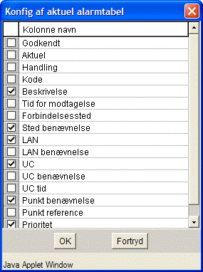

) eller tage krydset væk fra () afkrydsningsboksene ved siden af kolonnens
navn. De afkrydsede () vises.
) eller tage krydset væk fra () afkrydsningsboksene ved siden af kolonnens
navn. De afkrydsede () vises.Man kan bestemme hvilke kolonner, der skal vises i Alarmhistorikken og på listen over Indkommende Alarmer.
Sådan angives, hvilke kolonner vises:
1 Se enten Indkommende Alarmer eller Alarmhistorik som beskrevet i kapitlerne ‘Se Indkommende Alarmer’ eller ‘Se Alarmhistorik’ i denne vejledning.
2 Klik på ‘Opret tabel’. Den nedenfor viste dialogboks fremkommer.

3 Angiv, hvilke kolonner vises, ved at
afkrydse () eller tage krydset væk fra () afkrydsningsboksene ved siden af kolonnens
navn. De afkrydsede () vises.
4 Klik på ‘OK’.
Bemærk: Denne funktion er kun tilgængelig, hvis man bruger Microsoft Internet Explorer version 4.02 eller senere eller Netscape version 6.1 eller senere.